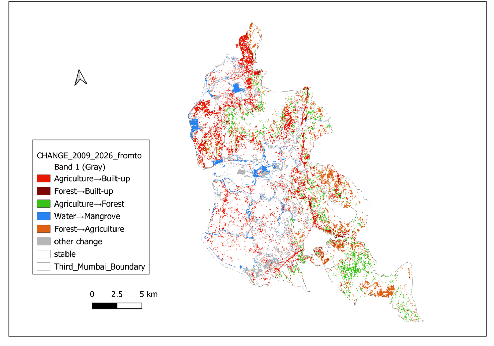

SHEET 01/08Research
Decadal Change: Third Mumbai / KSC New Town
Tracks land-use and ecological change across the Third Mumbai region, a new township announced by the Maharashtra State Government, between 2009 and 2026.
Agriculture→built-up: ~23.15 km² (~92% of built-up's full-period gain) · only 1.55 km² from forest · mangroves largely stable, with new built-up restricted outside ecologically sensitive zones.